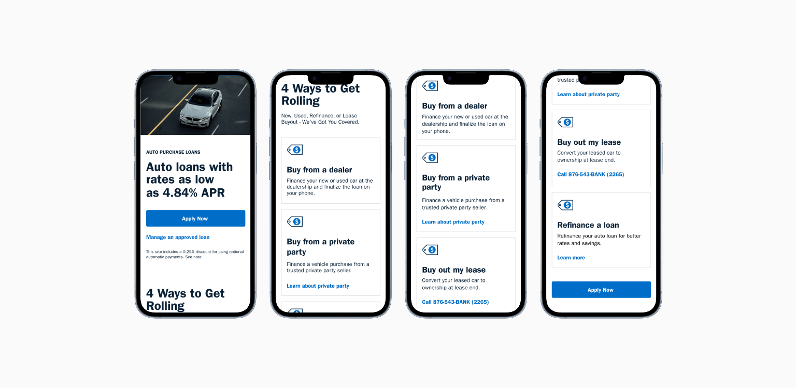
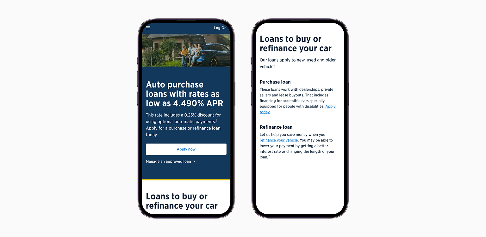
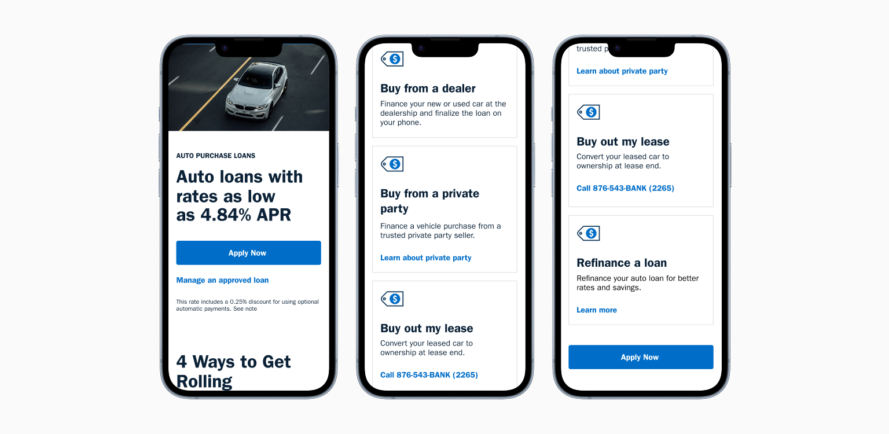
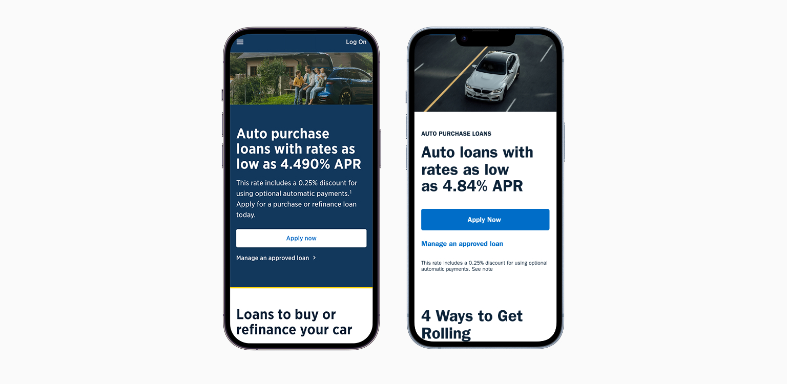

UX STRATEGY
Auto Loan Application Redesign

Auto loan application redesign
IMPACT & RESULTS
One redesign. Two outcomes that compounded.
application dropoffs
Measured at the highest abandonment point in the prior flow. The redesign also produced a reusable progressive disclosure component now part of the banking design system.
WHY THIS MATTERED
Experience gaps were creating avoidable losses.
Auto lending represents a critical revenue stream with significant competitive pressure from dealer financing and fintech challengers. Application abandonment created revenue leakage at the point of highest member intent.
With 67% of traffic coming from mobile, the desktop‑first flow created avoidable friction. The redesign aligned with enterprise digital transformation while directly improving clarity, usability, and conversion.
THREE OBSTACLES
Members were failing before they ever applied.
Content Overload
Legal requirements added extensive disclosure text to the page. The information section dominated the page, pushing key actions below the fold. Members could not find answers to their most common questions.
Unclear Prioritization
All content was treated equally with no visual hierarchy. Critical information was buried alongside legal disclaimers. Members could not determine if they were finding the information they needed.
Accessibility Concerns
Our primary audience of older military veterans struggled with dense text blocks. Mobile users (67% of traffic) faced especially difficult navigation. No clear path existed to find specific loan information.

Before: Legal disclosures dominated prime real estate. Members couldn't find what they came for.
THE DESIGN FRAMEWORK
Every decision had a reason.
Progressive Disclosure
Show only what members need at each decision point. Collapsed legal disclosures behind clear "Learn more" links, reducing cognitive load while maintaining full compliance.
Compliance as a Design Constraint
Legal disclosure requirements were not an obstacle to work around. They were a structural input that shaped every layout decision from the start.
Visual Hierarchy as Guidance
Use size, weight, and spacing to communicate importance. Members should scan and immediately understand what to do next without reading every word on the page.
Clarity Over Completeness
Members needed the right thing at the right moment, not everything at once. Every section was evaluated against whether it moved them forward.
THE REDESIGN
Structure did the work that copy could not.
Restructured Information Architecture
Separated rate information from application entry points. Created a clear visual path from awareness to application. Moved secondary content below primary actions so members reach decisions faster.
Progressive Disclosure Pattern
Collapsed loan type details into expandable cards. Members see key rates and CTAs immediately, with full details available on demand. Legal disclosures accessible without dominating the view.

After: Clear hierarchy and scannable content.

Before and After
STAKEHOLDER ALIGNMENT
The hardest design problem was not on the screen.
Legal and Compliance Partnership
Led working sessions with legal, compliance, and project teams to separate non-negotiable requirements from opportunities for simplification. Annotated prototypes became the shared language for evaluating compliance-friendly design solutions.
Marketing and Content Strategy
Partnered with marketing on plain-language content that balanced brand voice with regulatory requirements. Established reusable content patterns for lending products.
Technology Collaboration
Collaborated with engineering to balance design intent with component library constraints and technical feasibility. Prioritized changes by impact to support phased delivery.
REFLECTION
The questions I would still pursue.
The 19% dropout reduction measured the right abandonment point, but not the right outcome: completion. Whether members who made it through actually finished their applications at a higher rate was the number I never got.
Progressive disclosure works when users already know what they don't know, and I'm not convinced it holds the same way for a first-time borrower as it does for someone refinancing. I'd run sessions specifically with first-time applicants before calling that pattern a success.